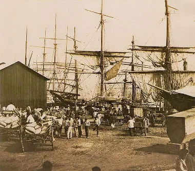

"A produção do café no Brasil expandiu-se a partir da Baixada Fluminense e do vale do rio Paraíba, que atravessava as províncias do Rio de Janeiro e de São Paulo. A cafeicultura no Brasil beneficiou-se da estrutura escravista do país, sendo incorporada ao sistema plantation, caracterizado basicamente pela monocultura voltada para a exportação, a mão de obra escrava e o cultivo em grandes latifúndios. Nessa região do Brasil, a produção cafeeira beneficiou-se do clima e do solo propícios ao seu desenvolvimento. O fato de ser rota de transporte de mercadorias entre o Rio de Janeiro e as zonas de mineração contribuiu também para a adoção da lavoura cafeeira, já que parte das terras estava desmatada, facilitando inicialmente a introdução das roças de café e benefician o o escoamento da produção através das estradas existentes. Os capitais iniciais para a produção do café vieram dos próprios fazendeiros e comerciantes, principalmente os que conseguiram acumular capital com o impulso econômico verificado apó s a vinda da Família Real ao Brasil, a partir de 1808."
